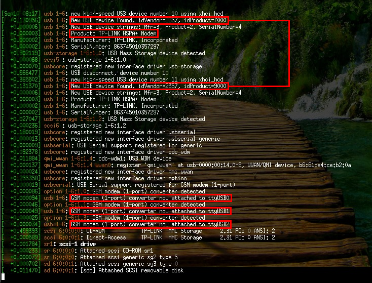

Debian
As 3G dongle is plugged into an USB port, it is detected as a USB storage or a CD-ROM. This happens because the 3G dongle has in in the storage mode for Windows drivers. The 3G dongle must be changed from “storage mode” to “modem mode”. Therefore is need to install “usb_modeswitch”
sudo apt-get install usb-modeswitch
and this is all. If “usb_modeswitch” is supported by your 3G dongle, it will work right out of the box. After plugging the dongle into the USB, usb_modeswitch will change the mode to the “modem” and the system will create virtual serial port (ttyUSB) in /dev. Now, when typing “dmesg”, the output will be similar to this:
Labelled texts:
- New USB device found, idVendor=2357, idProduct=f000. Vendor and Product ID are useful only when linux doesn’t detect 3G dongle.
- Vendor 2357 mean TP-Link and Product f000 model MA260 bud is detected as a storage device (after switch) When a usb_modeswitch (udev rules) detects modem and switches it to “modem mode” The Product ID will change. In this example to 9000 (Modem Product ID). Product: TP-LINK HSPA+ Modem. The Human readable name of the product.
- The GSM modem converter is now attached to ttyUSB0/1/2. This is the most important information for us. Modem creates three virtual (USB) serial ports, but only one is responding to AT Commands. To detect which port is correct see example: “ModemDector”.
Raspbian (Raspberry PI)
The situation on Raspbian is similar to Debian, but Raspbian supports smaller count of 3G dongle (09/2015). If a modem is not switched to “Modem mode” try the following steps: Update drivers and firmware. Raspberry have very nice utility for this “rpi-update” http://github.com/Hexxeh/rpi-update. Just type “sudo rpi-update” and wait. After updating reboot, try pluging in the 3g dongle again. Test if usb_modeswitch supports your modem. The simplest way is searching for a file with “switch commands” for your modem in the usb_modeswitch configuration folder in tar archive. The file has a format Vendor ID:Product ID before switch. In this case (TP-LINK MA260) 2357:f000
tar tf /usr/share/usb_modeswitch/configPack.tar.gz | grep 2357:f000
If the file does not exist, it is recommended to compile a new version of usb_modeswitch or to look for a configuration file elsewhere.It is possible that some alternatives will not work with the old version, so compiling the newest version is a better choice. In default state Raspbian uses old version 1.2.3 (09/2015) but actual version is > 2.0. Compilation of the usb_modeswitch program is easy and well documented on the project home page. Version of usb_modeswitch check with command:
sudo usb_modeswitch -e
Test if the kernel module Option will support your modem. The simplest way is to command
/sbin/modinfo option | grep v<Vendor ID>p<Product ID> after switch!
In this case
/sbin/modinfo option | grep v2357p9000 (not f000).
If the module Option and the program usb_modeswitch recognize your modem, everything should work and the virtual serial port will be created.